A Coach Made With GMax
by Richard Osborne
Chapter 11: Further Hints And Tips
A radical improvement to the viewport
In Chapter 1 I unkindly described the texture handling as next to useless, by default it is. It samples large files & tries to assume they're holding less information. I've since been told the trick - mention of it is buried in the help file but it's hard to find.
First choose your driver, mine defaulted to Heidi, Software z-buffer. If you have DirectX 8 or newer you can choose Direct 3D. Try both, if your graphics card is on the elderly side it won't like Direct 3D. In either case you need to change the configuration settings for the graphic driver.
You can find it under "Customize | Preferences - Viewports Tab" Click on "Configure Driver". Select your driver from the list, a window appears, this is for Direct 3D:-
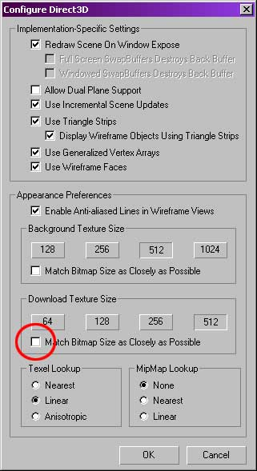
This for the Heidi driver:-
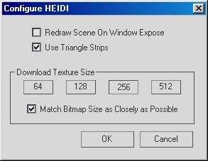
Make sure the 'Match Bitmap Size ....." is ticked.
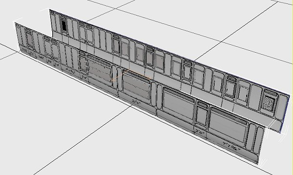
This makes a huge difference to the quality of the display screen, placing parts accurately is now easy. Compare the image above to the similar image in Chapter 8. I'm obliged to Nalle of Dekosoft Trains for that tip.
Transparent material
If you refer back to chapter 4 the section on manipulating the ends could be better; you might have thought "It's a pity you can't see through the end at the drawing". You can quite simply: make the ends active, right click then 'Properties'. You'll see 'Display Properties', press 'See-Through'. The part appears as a grey block, any texturing applied will not show. This is just a random box.
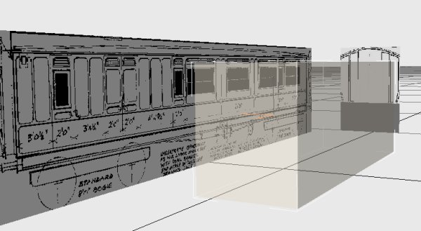
You can use wireframe views for modifying point positions.
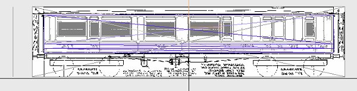
Transparent inside textures
I gave my corridor partition windows a translucent texture; some designers use transparent textures here. Optically it makes little difference unless you're looking from a platform, in theory using transparencies make less work for the graphics card which just has to say "Yes" or "No" & not bother about "How much?" It should make sorting easier.
Tint to textures
Still with textures I said that Shape View will isolate untextured polygons. You could help it by applying an overall tint to the texture files during the initial stages. Of course they'll have substantial body colour as they're textured but will be white at first. You could just spray on a colour, turning the opacity way down to about 20%. A better way would be to add a new raster layer, apply a solid colour, turn the opacity low & save as a .tga. PSP will try to save a file in its native .psp format, save this first, the layers will still be there so that they can be modified. A .tga file will have the layers merged. Even if you save this with a different name you can import any alpha channels from the first file.
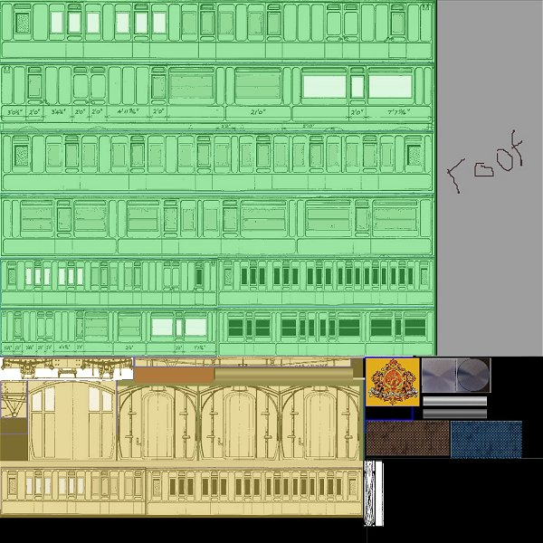
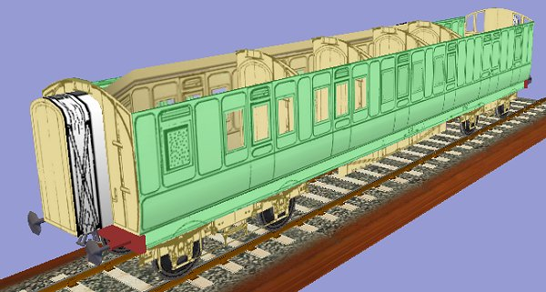
UVW menu
It would be possible to write a long tutorial just about the UVW menu; I'll leave that to someone else. I want to keep this tutorial simple. I've said that Gmax is extremely powerful in texture handling - this screen is at the centre of it. It's possible to use dragging or positioning by co-ordinates, I'll only use dragging. I've found the help files in Gmax are more helpful after you've got the hang of one method, all the buttons & bobs are explained. I'll just give you a couple of useful tips.
If we click on bogie2 then call up the UVW 'edit' screen we'll have the image below.
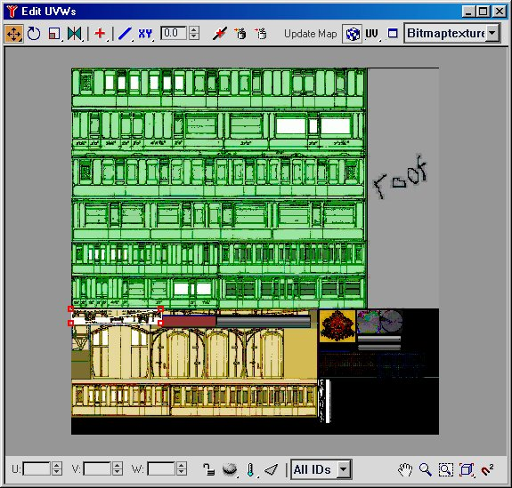
The bogie is quite small on the screen. If we lasso the corners to make them active - by default they'll turn red - then press the 'extents' on the bottom right toolbar the bogie will fill the edit screen.

We can make it even larger by pressing the normal Windows 'make it bigger' button top right.

The problem now is that we can't see the lines clearly. It's simple to change the colours. Press the button between UV & 'Bitmaptexture', a square with a blue line on top. The following screen will show. The default line colour is white.
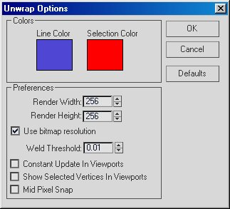
Change the colour option, the line colour is more important. The lines should show more clearly. I find that, on my computer, dragging the line has a slight time delay. Obviously the graphics card is working hard at this resolution. Don't forget that after making any changes it's necessary to 'Collapse All'.
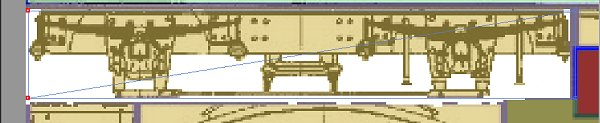
Mutiple Clones
I used clone before to give just 1 copy, here's how to make multiple copies. This is for the buffer, make the part active, I've textured it already. Press the 'move' icon, hold down the 'Shift' on the keyboard & drag the buffer in one axis; when you release the mouse button a screen appears.
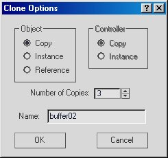
Three cloned buffers appear, if you check the objects list you'll find buffer1, the original, then buffer02, buffer03 & buffer04. Notice the offset is the distance you dragged the buffer.
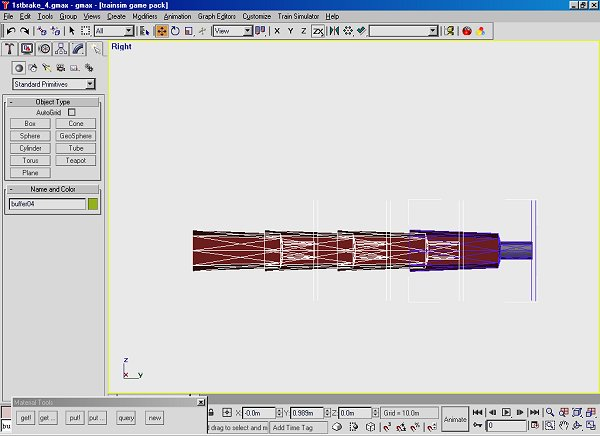
The logical sequence, though, would be clone buffer1, mirror it to the other side. Join them to make one part, clone & mirror to the other end.